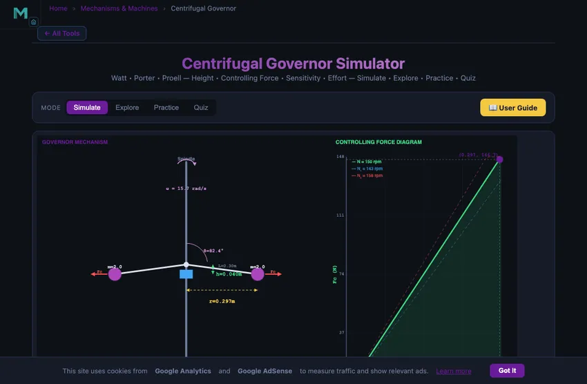
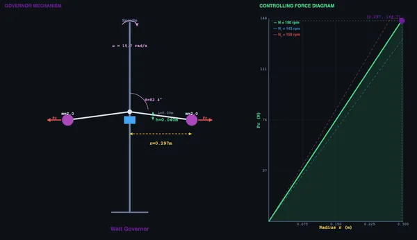

Centrifugal Governor Simulator
3D Model — Centrifugal Governor Simulator
Free centrifugal governor simulator — analyse Watt, Porter, and Proell governors with animated mechanism, controlling force, and sensitivity. Try it free!
Watt • Porter • Proell — Height • Controlling Force • Sensitivity • Effort — Simulate • Explore • Practice • Quiz
1 Overview
The Centrifugal Governor Simulator lets you visualise and analyse the behaviour of centrifugal speed-regulating mechanisms. These governors use centrifugal force from rotating masses (flyballs) to control engine speed by adjusting the fuel or steam supply. This simulator covers three classic governor types: Watt, Porter, and Proell.
You can observe how sleeve lift responds to speed changes, calculate controlling force, monitor sensitivity, and study the relationships between angular velocity, ball radius, and governor height. The tool helps build intuition about speed regulation mechanisms that are fundamental to mechanical engineering.
2 Loading the Mechanism
- Select a Governor Type (Watt, Porter, or Proell) — each has different characteristics and governing equations.
- Adjust Ball Mass, Arm Length, Speed, and Sleeve Mass (for Porter/Proell) using the sliders.
- Load presets for Low Speed, Medium Speed, High Speed, or Heavy Ball configurations.
- Watch the animated governor mechanism on the canvas respond to your parameter changes in real time.
3 Watching the Motion
The canvas shows an animated governor with rotating spindle, swinging arms, and flyballs. As speed increases, the balls swing outward and the sleeve rises. Readout cards display governor height (h), controlling force (Fc), sleeve lift, angular velocity (ω), rotation radius (r), arm angle (θ), sensitivity percentage, and effort.
For the Watt governor, height h = g/ω² depends only on speed. The Porter governor adds a dead weight (sleeve mass M), giving h = (m + M)g/(mω²), which extends the useful speed range. The Proell governor has extended lower arms that amplify sleeve lift for better sensitivity.
4 Geometry & Theory
Study 12 governor concepts across Governor Basics, Governor Types, and Analysis categories. Topics include controlling force diagrams, sensitivity analysis, isochronism, hunting, governor effort and power, and friction effects on governor performance.
5 Try a Problem
Practice generates problems on governor height, controlling force, sleeve lift, angular velocity, and sensitivity. Quiz presents 5 randomised questions from a pool of 15.
6 Design Notes
- Start with the Watt governor to understand the basic h = g/ω² relationship before adding sleeve mass complexity.
- Compare Porter and Watt at the same speed to see how the dead weight extends the useful operating range.
- Higher sensitivity means the governor responds to smaller speed changes — but excessively high sensitivity can cause hunting.
- An isochronous governor has the same equilibrium speed at all heights — theoretically ideal but prone to continuous oscillation.
- Use the speed slider dynamically to watch the balls swing out and the sleeve rise, building intuitive understanding of the feedback mechanism.
Centrifugal Governor — Speed Regulation in Machines


Centrifugal governors are essential mechanical devices used to automatically regulate the speed of an engine or prime mover by controlling the fuel supply. They operate on the principle of centrifugal force: as the engine speed increases, the rotating balls move outward due to centrifugal force, which raises the sleeve and adjusts the throttle valve. This fundamental feedback mechanism has been central to mechanical engineering since James Watt’s steam engine era.
Governors are classified by their operating principle. Centrifugal governors (Watt, Porter, Proell, Hartnell) use the centrifugal effect of rotating masses, while inertia governors respond to changes in angular acceleration. Centrifugal governors are further divided into pendulum type (Watt) and loaded type (Porter, Proell), where additional dead weight on the sleeve improves sensitivity and control range.
How Centrifugal Governors Work
The governor consists of a spindle driven by the engine through bevel gears, arms attached to the spindle, balls at the ends of the arms, and a sleeve that slides on the spindle. When the engine speed increases, the balls fly outward, the arms rotate, and the sleeve rises. This sleeve movement is linked to the throttle valve to reduce fuel supply, thereby reducing engine speed. When speed decreases, gravity pulls the balls inward, the sleeve descends, and more fuel is supplied.
Key Formulas and Analysis
For a Watt governor, the height is given by h = g/ω², where ω = 2πN/60. The controlling force is Fc = mω²r, where m is the ball mass and r is the radius of rotation. For a Porter governor, the sleeve mass M adds to the effective loading: h = (m + M)g / (mω²). Sensitivity is defined as (N&sub2; − N&sub1;) / N_mean × 100%, where N&sub1; and N&sub2; are the minimum and maximum operating speeds. An isochronous governor has equal equilibrium speeds at all radii (zero sensitivity range).
How to Use This Simulator
In Simulate mode, select a governor type (Watt, Porter, or Proell), adjust ball mass, arm length, RPM, and sleeve mass using the sliders. The canvas displays an animated governor mechanism that responds in real time, showing the balls swinging outward as speed increases. Readout cards show height, controlling force, sleeve lift, angular velocity, radius, arm angle, sensitivity, and effort. Switch to Explore mode to study 12 governor concepts across basics, types, and analysis. Practice generates random governor problems, and Quiz tests your knowledge with 5 randomised questions.
James Watt’s 1788 Invention — Engineering’s First Feedback System
The centrifugal governor predates control theory by 150 years. Watt added it to steam engines in 1788 as a purely mechanical feedback system: if the engine sped up (load lighter than expected), the spinning balls flew outward, raised the sleeve, closed the throttle, slowed the engine. If the engine slowed (load heavier), balls fell inward, sleeve dropped, throttle opened, engine sped back up. No electronics, no computers, no sensors — just the laws of mechanics implementing a proportional controller.
Maxwell wrote the first stability analysis of governors in 1868, founding control theory. Modern PID controllers and state-space methods all descend from his paper. The fact that you can still see Watt governors spinning on steam locomotives in museums is a kind of accidental monument to one of engineering’s most consequential innovations.
Watt vs Porter vs Hartnell — Why Sensitivity Matters
The basic Watt governor has limitations: it’s only sensitive at low speeds (h = g/ω² means height drops as 1/ω²) and the controlling force is weak. Three improvements followed in the 19th century:
- Porter governor. Adds a dead weight on the sleeve, increasing controlling force and pushing usable speed range higher. Standard for steam-engine governors after about 1860.
- Proell governor. Variant of Porter with the balls mounted on extensions of the lower arms. More sensitive at lower speeds.
- Hartnell governor. Uses a stiff spring against the sleeve instead of gravity loading. Tunable sensitivity, suitable for portable engines and IC engines. Most modern governors descend from this design.
Where Centrifugal Governors Still Live Today
Despite electronic engine management, centrifugal governors persist in:
- Marine diesel engines and industrial generators. Mechanical governors still serve as backup or primary speed control, particularly on stationary engines for grid backup.
- Small engines (lawn mowers, chainsaws). Throttle is controlled by a centrifugal mechanism inside the carburettor. Cheap, no electronics needed, fail-safe.
- Helicopter rotor speed governors. Mechanical governors regulate engine power to maintain constant rotor RPM. Failure of electronic systems falls back to the mechanical governor.
- Music boxes and clockwork. Friction governors regulate the speed of mainspring-driven movements; same physical principle.
References
- Maxwell, J. C. (1868) — On Governors. Proc. Royal Society. The original control-theory paper.
- Khurmi, R. S. — Theory of Machines, 14th ed., Chapter 18 (Governors).
- Hayward, J. (1958) — Theory and Practice of the Centrifugal Governor. Mechanical Engineering Publications.
Explore Related Simulators
If you found this Centrifugal Governor simulator helpful, explore our Governor simulator, Flywheel simulator, Gear Trains simulator, and the Centrifugal Pump Test Rig for more hands-on practice.